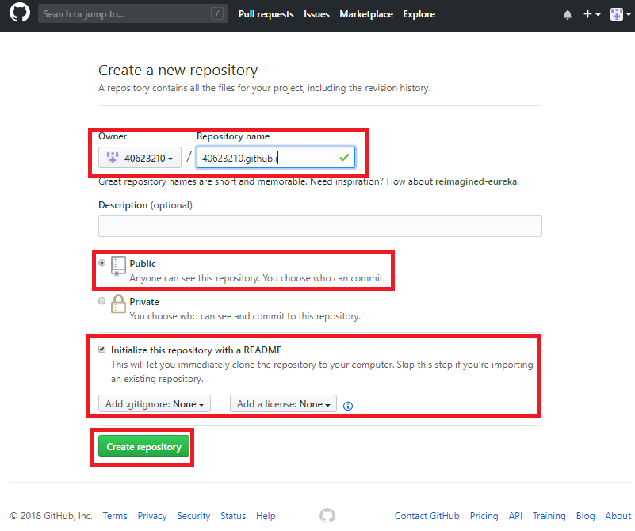
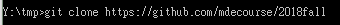
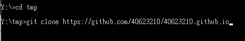
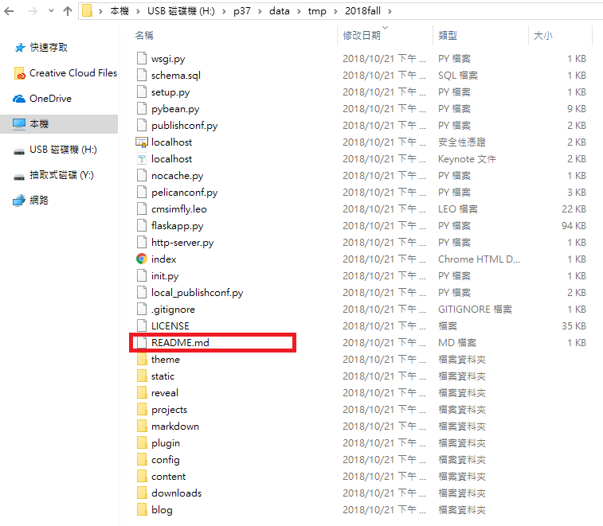

在github上建立一個新倉儲 "學號.githb.io"

以2018fall為示範倉儲，將2018fall及40623210.github.io clone下來


將除了.git、REABME.me的檔案複製到自己資料夾，使用git add . 、 git commit -m ""、git push提交至GitHub。

使用python wsgi.py 進入近端(localhost:8443)，將標題更改為"2018 Fall 40623210 分組網站"，再重新提交至GitHub。
大學就像間餐廳，進餐廳不只要會吃也要學會如何做菜，不要花錢進來餐廳而不吃。
Q:What is OnShape?
A:OnShape是一套無須下載任何軟件的線上繪圖軟體，繪圖只需網路及帳號，在團隊協同繪圖時不需在同一地方進行，其儲存都在雲端。
Q:Why choose Onshape？
A:Onshape 有7種方式（密碼保護訪問、雙因素認證、數據庫備份程序、專用服務器、通信安全、加密、第三方測試）來保證設計的保密，即使黑客將 Onshape 服務器上的數據成功地破壞掉，也無法使用它，因為數據經過加密和格式化，所以是十分的安全，可以放心地使用它。
心得:目前市面上有許多CAD軟體，第一次聽到OnShape時以為跟一般CAD軟體一樣需要下載龐大檔案的軟體，但了解後發現並不是，OnShape僅需要有網路就能在線上繪圖，也能同時和人協同，這大大減少了設計產品的時間成本!